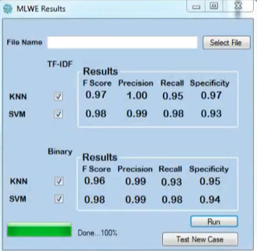
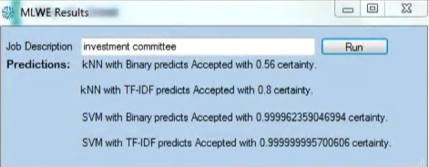

Data Scientist
Background and Interests
My journey into data science started the same way most journeys do, with a minor existential crisis. After an extended internal battle during at the end of second, I realized that it was irresponsible to stay an undergrad for 4 years when I could easily finish in 3. This meant I had under a year to figure out what to do with myself. I was not ready for full-time work at the time and wanted to remain in the cocoon of academia for one more year if possible. This left only one real option: graduate school. As much as I did thoroughly enjoy my undergraduate majors (computer science and math) the prospect of studying them at a graduate level was unappealing, given that application, not theory, had always been my perferred aspect of both. So I needed something like computer science and math, but not computer science and math. Enter: data science. Big data had been this thing that my parents, both of whom work in healthcare, had been touting as the cutting edge for years, so all things considered it seemed like a natural fit. UVA had recently opened up a one year Masters in Data Science, so the signs from the universe really could not have been clearer.
After a very enlightening summer internship, detailed below, I had an even more lucid vision for my future in data science, a vision that persists to this day. Ideally, I would like to be in a "data science" role with a focus on software development (i.e, building out analytical tools, something along the lines of a machine learning engineer). I am very open to any opportunity involving data science or software development, but my primary interest is directly at the intersection of the two.
Skills
My main day to days tools are R and Python. In R, I am familiar with both the Shiny framework for web apps, the Rcpp framework for C++ integration into R, and package development in R (see my software development page for more details). I use the Anaconda distribution of Python, meaning I have good experience with the full data science collection of packages in Python, as well as some of the deep learning frameworks. In Python, I frequently use Jupyter Notebooks for analytical presentations and have used the Django framework for web development. I have been exposed pretty heavily to SQL, though have used it outside of academic contexts. For data related write-ups, I use Latex, RMarkdown, or Jupyter Notebooks. I also have exposure to NoSQL tools including Hadoop, Mapreduce, and Spark, but these are also limited to academic contexts.
I further have some experience in the realm of cloud computing. After taking a cloud computing course in my final year of undergrad, I found myself using a number of cloud services throughout my master's program. These services included AWS, Google Cloud, and a private cloud at UVA called Rivanna. In order to validate my skills, I successfully completed the AWS Certified Developer Associate Certification and Google Cloud Professional Data Engineer Certification, both valid through June 2020.
Coursework
| Course Number | Course Name | Grade | Additional Info/Main Technologies Used |
|---|---|---|---|
| SYS 6018 | Data Mining | A+ | R |
| SYS 6016 | Machine Learning | A | Python |
| SARC 5400 | Data Visualization | A | Javascript (d3), Tableau, Illustrator, Raw |
| SYS 6582 | Reinforcement Learning | A | Python |
| STAT 6021 | Linear Models for Data Science | A | R |
| DS 6013 | Capstone Work 2 | A+ | Python, Java |
| DS 6011 | Capstone Work 1 | A | Python, Java |
| DS 6001 | Practice and Applications of Data Science 2 | A- | Python, SQL |
| DS 6001 | Practice and Applications of Data Science | A | Python |
| DS 6002 | Ethics of Big Data | A | |
| STAT 6430 | Statistical Computing for Data Science | A | R |
| CS 4740 | Cloud Computing | A | Python, Amazon Web Services |
| STAT 5170 | Applied Time Series | A- | R |
| CS 4750 | Database Systems | A+ | SQL |
| MATH 4110 | Intro to Stochastic Processes | A | |
| STAT 5120 | Applied Linear Models | A | R |
| STAT 3080 | From Data to Knowledge | B+ | R |
| STAT 3120 | Intro Mathematical Statistics | A | |
| MATH 3351 | Intro Linear Algebra | A | |
| MATH 3100 | Intro Mathematical Probability | A+ |
Projects
Now to share a few of the projects that I have worked on pertaining to data science.
Language Agnostic Speech Classification (Capstone Research)
One of the major components of my Master's program is our Capstone research project. Our project is, tentatively, titled "Using Speech to Predict Violence in Value-Based Groups". This project is an extension of two years of prior capstones that have attempted to do similar things. However, those projects were all about classifying groups in English. We want to create some sort of pipeline that can perform such assessment in any language. For this reason, we are calling our project "language agnostic". In theory, you should be able to take the pipeline that we create and, given enough documents, classify groups in any language. The group consists of myself, two other Masters students, and two advisors. This project will culminate in our submission to the Systems and Information Engineering Design Symposium (SIEDS) conference, among other conferences.
Because this project is an extension of other projects, there is a pretty large codebase for us to work off of. This codebase is largely developed in Python, however, one of our advisors has some text mining code written in Java that we have used as well. We have used Jupyter Notebooks for a good deal of our development and the project is hosted on Github. Because this is such a large and ongoing project, I have decided to limit how much detail I give here, instead opting to share more about this project in blog posts.
Machine Learning Work Experience
This project was the first data science related project I ever worked on and was the first time I was completing a large project for someone else in a professional setting. Before I can describe the project, I need to give a little bit of context. This project was done during a summer internship at the CFA Institute. For those unfamiliar, the CFA Institute offers a prestigious financial analyst certification called the CFA (Charted Financial Analyst) certification. Now I was at CFA for a software development internship, but my manager, Daniel, really wanted to tailor the internship to my interests, which had pretty recently become data science. So he paired me up with Maria, the relationship management intern, to manifest an idea that he and Maria's manager had.
The basic idea went something like this. After someone has passed the CFA Exam, they have the option to join Societies within CFA (basically large networks of other CFA's). In order to qualify for these societies, an applicant must have a suitable amount of relevant work experience. When a new CFA applies, they fill out a form detailing jobs they had and how long they have worked at them. A Membership team then reviews the application and for each individual job, manually decides if that job qualifies as "relevant" work experience. It is an extremely tedious procedure and our managers saw the opportunity to automate. Which is where we came in.
Essentially, we had to goals for the summer, amongst the other intern-y things that we did. The first was to create a proof of concept to demonstrate that machine learning was indeed appropriate for this sort of task. The second was to be an advocate for machine learning within the organization. Now, we were for the most part given complete autonomy to conceptualize and execute this project. That means we had to research the domain, specify the problem, and implement a solution.
Step one was domain research. This involved a bunch of meetings, set up by Maria, with the Membership team to get a better idea of what they do, and where automation might come into play. One thing became clear very early. There were members of the team, particularly older members, that were not fans of what we were doing. They were either adamant that a machine could never do this work, or worried that they could, which they assumed meant they would lose their job. In fact, much of our early work was explaining to the team that a) text classification is a pretty well-understood problem that machines tend to do quite well with, and b) no, the interns are not trying to take away your job. This classification is one minor part of the total work of the membership team. Much of their work is, well, helping current and prospective members, something that machines can't do. Thus, even if this project were to succeed, it would only lighten the burden on the team, allowing them to pursue other, indisputably human parts of their jobs.
Now that we had done the research and begun to warm the team up to the idea, we could go about thinking what a solution might look like. We envisioned some sort of plugin to the existing pipeline that would read incoming job descriptions and pass them through some models that would assign a probability of relevance to the job. Jobs that  had high probabilities one way or the other could be automatically assigned. Those with uncertainty could be passed onto the team for group review, a common practice amongst the team to deal with tricky cases. In this way, we are not even fully automating this portion of the team's job, just making the already easy cases go faster.
Since we were aiming for a proof of concept, we decided on a simple app that would take in a description as input, and output a prediction. Much to my chagrin, we were mandated to build this app completely in C#/.NET. My manager's reasoning was that CFA used .NET so it is most appropriate to develop in it, and he also wanted to afford me the opportunity to learn a new technology. I can't argue with his logic, but going from doing machine learning in Python to doing it in C# feels like wearing a vest full of stones. Nevertheless, we pursued. We were given historical data in CSV format to work with and off we went.
Feature engineering was largely TF-IDF extraction. From there, we really just had to try out a few models. We ended up trying KNN, Naive Bayes, and SVM. These were chosen because I didn't know machine learning very well at the time, and those are what my manager recommended, so easy enough. After some pretty  positive results (CV using the F1 score as the validation metric), we created a front-end GUI to allow the user to input new descriptions.
The last step was the presentation. We ended up doing three separate presentations, one to the Membership team, one to the developers, and one to some company executives. The project was overall well received, but the likelihood of it ever being implemented is unlikely. This is primarily because the company is undergoing a technological transformation, meaning intern projects don't exactly take priority.
As you can tell by the length of this description, it was a pretty meaty project and one that I learned a lot from. Some major takeaways:
- If you tend to be more disorganized, like myself. Get you someone like Maria who is almost annoyingly organized. It really is a Godsend to have a partner with everything together schedule-wise.
- Prioritize, prioritize, prioritize. In school, you have close ended assignments that you are expected to, and often easily can, complete every part of. In the professional world, some features of a project will fall by the wayside and establishing what is important early on is the only what to get any sort of viable product.
- My manager left me with an all-encompassing data science quote that I will not soon forget. I have no idea if he came up with it, but after giving our final presentation, he told us "Never aim for perfection in any sort of machine learning model. A perfect model cannot exist and isn't even the point. The point is to identify where you are simply not ok with making errors and doing your best to minimize those."